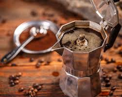

☕ Ristretto Yapım Rehberi

📖 Ristretto Hakkında Bilgiler
Ristretto, espressonun daha az suyla ve daha kısa sürede hazırlanan, çok daha yoğun bir versiyonudur.
İtalyancada “kısıtlı” anlamına gelir. Aynı kahve miktarı kullanılır ancak su miktarı azaltılır.
Genellikle 15-20 ml olarak servis edilir ve espressoya göre daha tatlı, daha yoğun ve daha gövdeli bir tada sahiptir.
Demleme süresi kısa olduğu için acı tatlar ortaya çıkmadan işlem biter. Bu yüzden ristretto, espressoya göre daha aromatik hissedilir.
🌟 Temel Özellikleri
- Espressoya göre daha kısa sürede demlenir.
- Daha yoğun ve gövdeli bir kahvedir.
- Daha az acı, daha tatlı aromalara sahiptir.
- Kafein oranı espressoya göre biraz daha düşüktür.
🏠 Evde Kolay Ristretto Yapımı
🛠️ Gerekli Malzemeler
- Moka Pot
- İnce öğütülmüş kahve
- Sıcak su
- Soğuk su dolu kap veya ıslak havlu

📋 Adım Adım Hazırlanışı
- Moka potun alt haznesine normalden daha az sıcak su koyun.
- Kahve sepetini ağzına kadar doldurun ancak bastırmayın.
- Moka potu kısık ateşe koyun ve akışı izleyin.
- Kahvenin rengi açılmaya başladığı anda moka potu ocaktan alın.
- Demlemeyi durdurmak için moka potun alt kısmını soğuk suya tutun.
☕ Küçük Bilgi:
Ristretto, yoğun aroması nedeniyle
kahve tutkunlarının en sevdiği
espresso türlerinden biridir.